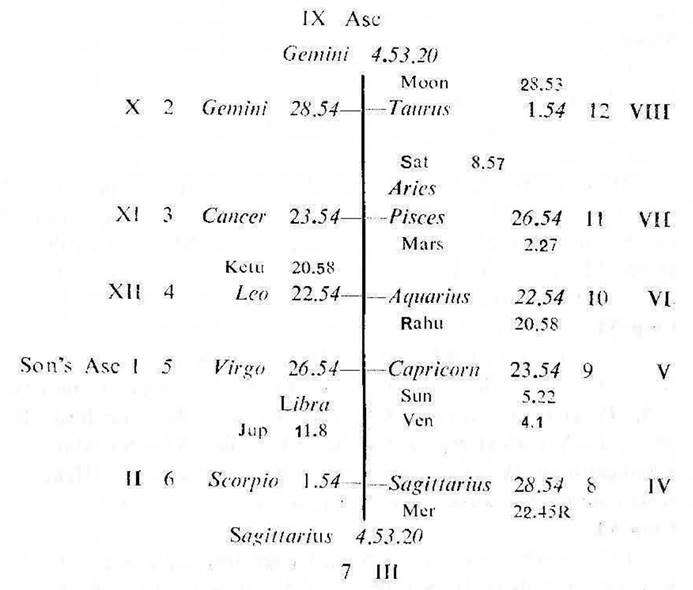
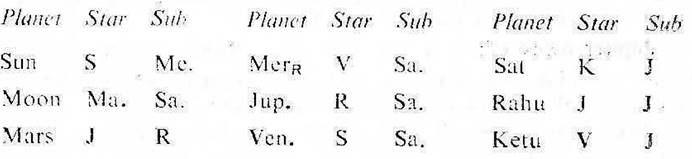
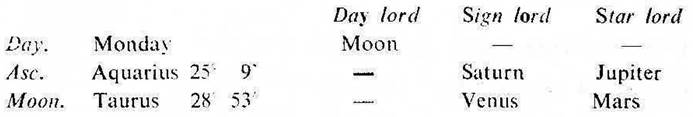

Question. Will my son get scholarship?
Number. 45 (out of 249)
Place of Judgment. 23°N 2′, 72°E 35′.
Time of Judgment. 19-1-1970, Monday; 10-17 A.M. I.S.T.


If the cuspal sublord of the 11th be the significator of 2 (money), 6 (scholarship) or 11 (gain) and connected with the house 4 (studies), one gets scholarship for studies during the joint period of the significators of 2, 6 and 11.
If the cuspal joint rulers (the sign lord, star lord and sub lord) of the 6th and/or 11th be the significators of 2, 6 and 11 and connected with the 4th, one gets scholarship during their joint period.
In this horary map the father asked the question about his son. Moon is in 12 (worries to the querent). Consider the 5th cusp as the Asc. for the son and proceed. For convenience the roman letter is given to each house counted from the 5th cusp.
Moon owns XI, its star lord Mars owns II and occupies VI. So Moon is the significator of II (money to the son), VI (scholarship to the son) and connected with XI (gain to the son). Hence Moon clearly indicates that the querent is worried about the scholarship to his son.
The sub lord of XI cusp is Mars. It owns II and occupies VI; it is direct in motion. Its star lord Jupiter is direct in motion, it owns IV and occupies the Asc. of the son. Its sub lord Rahu (being in Aquarius) represents Saturn owning VI. So Mars is the significator of IV and connected with II and VI. Hence the scholarship for studies is promised to the querent’s son.
It is jointly governed by Saturn (sign lord), Jupiter (star lord) and Saturn (sub lord). Saturn owns VI; it is in the star Ketu in XI and in the sub Jupiter owning IV; so Saturn is the significator of XI and connected with IV and VI.
Jupiter owns IV; it is in the star Rahu which represents Saturn owning VI and in the sub Saturn; so Jupiter is the significator of VI and connected with IV and VI.
Thus Mars (the sub lord of XI cusp), Jupiter (the star lord of VI cusp) and Saturn (the sub lord of VI cusp) are the significators of and connected with II, IV, VI and XI.

None of these planets is in the star or sub of a retrograde planet. So the ruling planets are Moon, Mars, Jupiter, Venus and Saturn.
The common planets between the ruling planets and the significators of II, IV, VI and XI (mentioned above) are Mars, Jupiter and Saturn.
(a) At the time of judgment (Mars Dasha balance 4Y 1M 1D) the querent’s son is running the joint period of Mars and Saturn. They both are the ruling planets as well as the significators of scholarship. So it is certain that the son will get scholarship during their joint period.
The final significators as discussed above are Mars, Jupiter and Saturn. So the son will get his scholarship during the joint period of Mars, Saturn and Jupiter (27-6-1970 to 20-8-1970).
(b) The sub lord of VI cusp (scholarship) is Saturn. It is a slow moving planet. So he will receive the full amount of scholarship gradually.
Actually, he first received a part amount of scholarship on 19-2-1970 when Moon was transitting in Cancer in the star of Saturn (the sub period ruler).
There after, he received part amounts of scholarship regularly every month and the final amount was received in the month of July 1970 during the joint period of Mars, Saturn and Jupiter.
In July 1970 Sun was transitting in Gemini in the star Jupiter (the inter period ruler); Mars in Cancer in the star Saturn (the sub period ruler) and Jupiter in Libra in the star Mars (the period ruler).